真实网页深度搜索基准：最强模型仅39.0%
研究团队发布 OpenDS-World：200 道跨模态真实网页取证题，12 个前沿模型最高仅 39.0% 正确率。
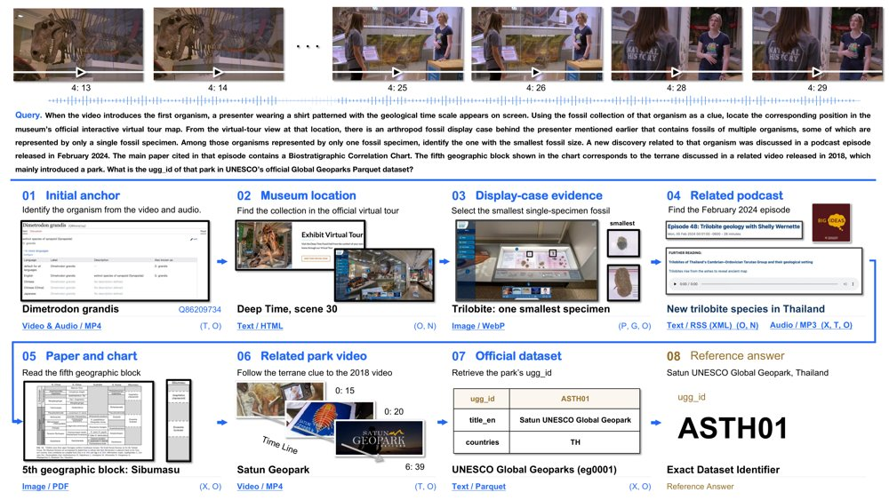
OpenDS-World 的一个示例任务：智能体需要串联视听识别、虚拟导览导航、文档查阅和结构化数据检索等多类网页来源中的证据。
解决了什么问题。现有深度搜索评测多在静态语料或预先给定的检索路径上进行，难以反映真实开放网页的情形：证据分散在多种模态、多种文件格式中，而且常常必须通过导航、参数设置、时间定位等交互操作才能取得。论文认为，现有基准没有充分覆盖这三类相互交织的挑战，因此无法系统评估智能体的端到端研究能力。
方法。作者提出 OpenDS 任务，并据此构建 OpenDS-World：200 道题覆盖文化、日常生活、科学、经济、历史、自然、社会、技术八个领域，每题都以一段真实视频为起点，要求智能体自主搜索、访问并串联跨来源证据，得出唯一的事实答案。证据链由十名独立评审人工核验，另有 50 名解题者仅使用常规浏览器完成 1000 次独立尝试，作为人类基线。评测在统一的工具环境和执行协议下进行：每个样本的搜索阶段限时 3600 秒，工具调用上限为 100 次；模型答案由 Qwen3.8-27B 作为裁判，按语义等价判定正确性。
关键结果。12 个前沿模型中表现最好的是 GPT-6 Astra，总体正确率为 39.0%，即在 200 题中答对 78 题；其后依次是 Claude Opus 5.5 的 38.0%、Gemini 3.8 Flash 的 36.5%、Claude Fable 5.1 的 33.5%。人类 1000 次独立尝试的整体正确率为 21.1%，即 211 次答对；有 42.5%（85 题）的任务没有任何人类解出。基准共标注 787 条证据条目，平均每题 3.94 条，覆盖 4 种模态、42 种格式和 7 类访问方式，其中 82.5% 的任务涉及至少两种模态。失败的工具调用只占全部调用的 2.83%–9.42%，却消耗了 19.27%–61.90% 的工具执行时间；Qwen3.8-Flash 只有 6.5% 的任务自然终止，80.0% 撞上了工具调用上限。
为什么值得看。这项工作把评测从静态检索推进到真实开放网页中的连续取证，并用人类可解性做难度校准，为长程搜索智能体的信息源选择、终止决策和错误恢复研究提供了统一平台。
局限 / 存疑。人类基线被禁止使用任何基于 LLM 的工具，只能使用常规浏览器，因此人类分数未必代表能力上限；难度分组直接由人类解题结果定义，模型排名也随之变化，例如 Gemini 3.8 Flash 在 High 组反而最高，为 28.24%。此外，评测依赖实时开放网页和 LLM 裁判，网页内容漂移与判分口径都可能影响可复现性。
AI 智能体 Agent / 自主智能
alphaXiv · arXiv
新基准评测视频中心深度研究报告
论文提出以单一视频为线索、检索外部多模态证据生成报告的任务，构建50任务、6414条标准的基准，18配置最高63.3分。
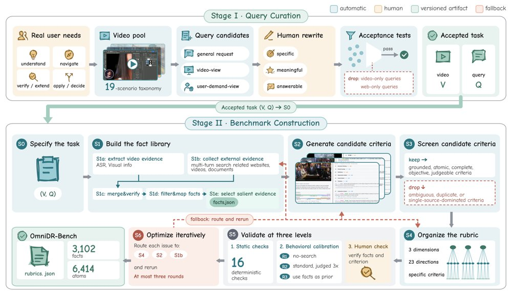
查询筛选与审计式评分标准构建（ARC）：保留依赖源视频且需要外部证据的任务，独立收集视听与开放网络多模态证据，生成 Omni-ART，并校验事实与标准。
解决了什么问题。现有文本深度研究智能体生成带引用报告，但不处理给定视频的视听与时间证据；视频深度研究基准多面向短答案问答；文本-图像报告系统也不以源视频为研究证据。因此，尚无基准评估围绕单一源视频、融合外部多模态证据并产出完整可交互报告的能力。
方法。论文定义“以视频为中心的深度研究报告生成”：给定源视频与用户请求，智能体识别研究锚点，检索网页、图像、视频和文档证据，并输出可跳转视频时刻、带引用的交互式 HTML 报告。方法上给出七阶段技能化工作流，并提出 Omni-ART 三层评分树（内容、引用、呈现三维度，23 个共享方向，任务特定原子二值标准）和 ARC 审计式构建流程；基准含 50 个中英文任务、19 个真实子类、6,414 条标准。
关键结果。18 种配置中最高为 Claude Opus 5 的 63.3/100，GLM-5.3 为 62.0 且完成全部任务，两者任务自助法 95% 置信区间为 [-4.0, 5.6]；呈现平均 81.8 分，内容 45.4、引用 47.8。细粒度上，直接视频事实通过率均值 79.9%，外部证据 8.7%、跨源验证 8.8%、多事实组合 5.0%，逻辑一致性 21.2%、主张支撑 15.9%，视频忠实度 92.4%。
为什么值得看。该任务直接对应看视频后定位关键片段、核验说法、复现操作和做决策的需求；基准显示当前智能体会做界面却弱于证据整合，为后续智能体设计提供了可审计的诊断维度。
局限 / 存疑。基准仅 50 个任务，部分子类只有 1–5 个任务，类别差异只能作描述性解读；评分依赖固定的 GPT-5.6 Sol 评审与双栏报告模板，部分方向也受参考技能影响，可能对其他流程不利。
AI 智能体 Agent / 自主智能
alphaXiv · arXiv
统一离线基准评测智能体视觉理解
AgentVQA 从 23 个数据集人工筛出 1000 道题，覆盖五大智能体场景；22 个 VLM 中最高仅 58.5%
AgentVQA 把 Web Agents、自我中心视频、机器人、游戏与空间规划五个智能体领域统一到一个离线基准中。
解决了什么问题。视觉语言模型正成为机器人、网页导航、游戏等智能体系统的决策核心，但它们在智能体场景下的能力仍缺乏可比评测。在模拟器或真实环境中做在线评测虽被视为金标准，却成本高、难复现、难规模化；而现有离线 VQA 基准要么只覆盖单一领域，要么答案格式与难度不一致，难以聚合做跨域分析。通用 VQA 基准上的高分也并不能可靠预测智能体任务的成功率。
方法。作者构建 AgentVQA：从 23 个源数据集采样候选，覆盖 Web Agents、机器人、自我中心视频、游戏、空间规划五个领域，最终每域 200 题、共 1000 道人工校验的多选题。流程分五阶段：Gemini 2.5 Pro 为非多选题生成三个「困难负例」，Gemini 与 Claude 多轮筛查剔除约 45% 候选，人工再审并剔除约 60%（因歧义、标注错误或过于简单），最后二次人工核验确保唯一正确答案，仅有约 22% 的初始候选通过全流程。评测统一用单选字母输出，对不支持视频的模型等间隔采样 32 帧，推理模型与非推理模型温度分别为 0.8 和 0.2。
关键结果。在 22 个开放与闭源模型中，最好的 Gemini 3.7 Flash 仅达 58.5% 平均准确率，GPT-5.6-sol thinking-high 为 55.0%，GPT-4o 为 31.4%。分领域看，自我中心视频最好（平均 59%）、游戏 51.5%，空间规划 46%、机器人 38%、Web Agents 最差（29%，仅三个模型超过 40%）。开源与闭源差距不大：最好的闭源模型领先最好的开源模型 Qwen3.8 27B（50.9%）7.6 个百分点，Kimi K3（48.3%）等开源模型反超 Claude Opus 4.8（44.0%）。在 Web Agents 上移除动作历史，五个模型平均在 AitW 下降 9.5%、在 MONDAY 下降 10%。与 SpatialWorld 空间规划赛道的排名相关性达 Spearman ρ=0.895（p=8×10⁻⁵，12 个重叠模型），而与 MMMU-Pro（ρ=0.67）、GPQA-Diamond（ρ=0.59）、ChartQA-Pro（ρ=0.44）相关性中等偏弱。错误分析（基于 Gemini 3.1 Pro 的错答）显示：Web Agents 中 78% 为定位错误，游戏 71% 为视觉误解，机器人与空间规划分别以空间混淆（65%）和视角缺口（62%）为主。
为什么值得看。它把分散在五个领域的智能体视觉能力整合成一个可快速、确定性打分的离线基准，并在匹配领域上与在线交互评测排名高度一致，可作为大规模模型筛选的廉价替代。结果也提示智能体能力更像一组领域特异技能的集合，而非单一通用能力。
局限 / 存疑。基准是离线多选题，丢失了在线环境的非确定动态与多轮交互，开放式坐标接地被离散化后可能掩盖细粒度误差；跨领域与 SpatialWorld 的相关性较弱，说明单一领域分数不能当作整体智能体能力的代理。错误模式分析只针对 Gemini 3.1 Pro 的错答，且主要由模型自动归类、仅人工复核了 100 条标注，其百分比未必能推广到其他模型。
AI 智能体 Agent / 自主智能
计算机视觉 CV
alphaXiv · arXiv
朴素 RAG 在多数长期对话基准上胜过智能体记忆
只用原始历史做稠密检索加重排的 Raw-RAG，在四个基准的七种模型设定中六次排第一。
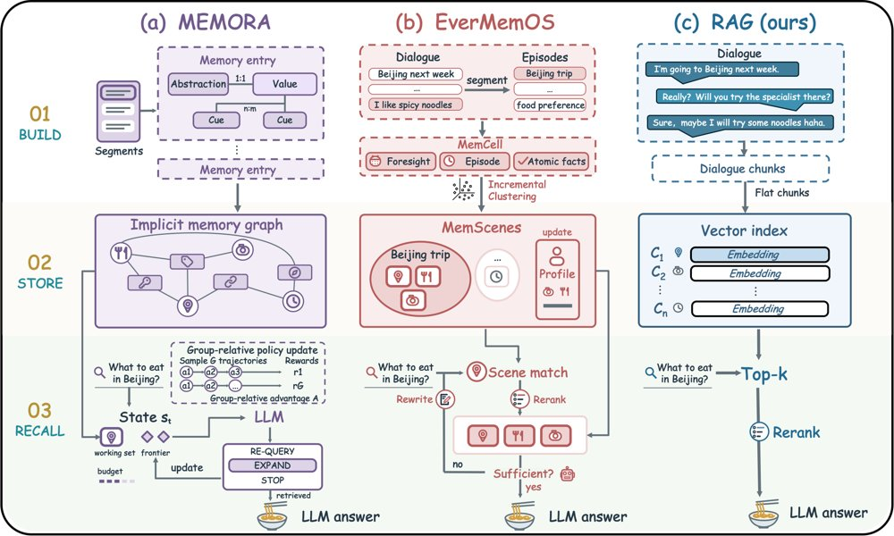
智能体记忆系统（EverMemOS、Memora）与朴素 RAG 在构建、存储、召回三个阶段的流程对比。
解决了什么问题。长期对话记忆领域近年流行「智能体记忆」系统：写入时做抽取、摘要、改写、图结构组织，检索时用迭代搜索或可训练策略。但这些复杂度是否真的必要，此前缺乏与精心配置的朴素检索基线的正面对比，且已有评测中的 RAG 基线常存在检索单元过粗、检索深度受限或缺重排等弱点。
方法。作者提出 Raw-RAG：把原始对话历史切成 256 token 窗口、32 token 重叠的块，用稠密检索取 128 个候选，重排后取前 15 块并扩展到完整轮次，直接交给阅读模型作答，全程不做记忆改写。他们在 LoCoMo、LongMemEval、MEME、MemoryAgentBench 四个基准上与多个智能体记忆系统对比，并做写入策略消融、证据覆盖与路径保留诊断。
关键结果。在七种基准–模型设定中（排除 Full-context），Raw-RAG 六次排名第一，比最强对比智能体记忆系统高 0.13–5.53 分：LoCoMo 高 0.65–0.95 分，LongMemEval 高 0.13 分，GPT-4o-mini 上的 MEME 高 2.24 分，MemoryAgentBench 高 4.48–5.53 分。例外是 DeepSeek-V4-Flash 上的 MEME，MemMachine 领先 1.52 分，而 Full-context 在该设定下领先 Raw-RAG 19.98 分。对 Mem0 的写入审计显示，UPDATE 与 DELETE 仅占 LoCoMo 33,902 次写入决策的 4.39%、LongMemEval 428,858 次的 2.46%，有效改写仅占 1.90% 与 1.34%；把 UPDATE 换为只追加的 ADD、DELETE 换为 NONE 后，LoCoMo 准确率从 67.36% 升到 69.42%。在 MEME 的路径保留诊断中，Raw-RAG 的条件路径覆盖率最高，为 62.34%，MemMachine 为 56.70%，MemU 仅 9.62%。
为什么值得看。它提示长期对话记忆的主要瓶颈可能是证据获取而非结构化管理：有用的证据既包括答案值，也包括推导答案所依赖的关系与路径。作者因此主张，任何复杂记忆系统都应先与规格明确的朴素 RAG 基线比较，说明新增复杂度到底贡献了什么。
局限 / 存疑。证据仅限公开基准上的离线对话，不覆盖交互式、多模态或真实运维场景；原始历史的存储随历史增长，并带来隐私与删除约束，且状态重建效果依赖阅读模型能力（不同阅读模型在 MEME 上差异明显）。消融中原子事实抽取使 MemoryAgentBench 测试时学习子集从 47.68% 掉到 15.37%，但该实验同时改变了 token 体量与示例结构，两个因素未解耦。
AI 智能体 Agent / 自主智能
alphaXiv · arXiv
SCOPE：把策略编译成神经符号程序
SCOPE 将自然语言策略编译为弱模型可执行的谓词程序，在四个 agent 策略任务上取得最高平均准确率。
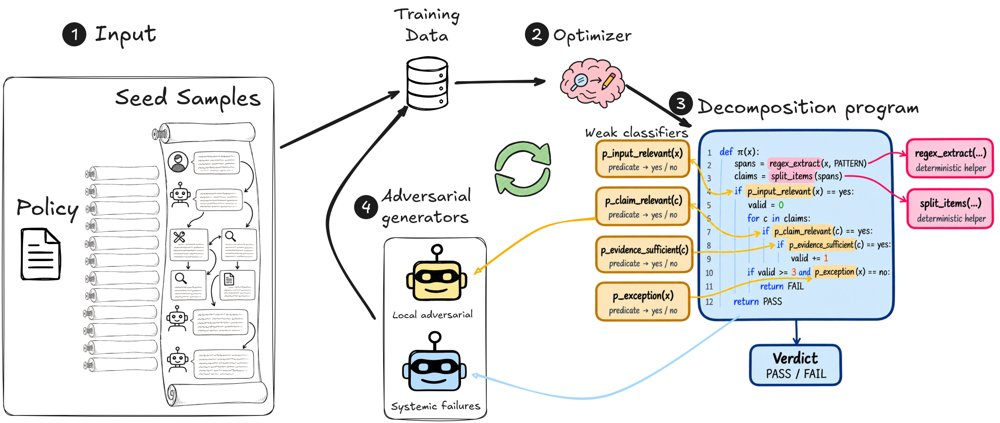
SCOPE 把策略和少量种子样本编译为弱模型谓词、确定性提取器与 Python 组合代码，并用局部和整体对抗反例迭代联合优化程序与训练池。
解决了什么问题。LLM agent 的策略执行已从单轮内容审核转向多轮对话和工具调用轨迹上的复合策略，判决依赖条件、例外和计数。微调 guardrail 在复合策略上会退化，LLM-as-a-judge 虽更准但推理成本高且预测不稳定；现有神经符号方法的符号层表达力不足，且往往针对固定数据而非策略本身优化。
方法。SCOPE 把策略编译成可执行程序：谓词由弱模型回答，确定性 extractor 负责计数和抽取，Python 组合代码把谓词输出映射为判决。优化器利用执行 trace 将失败归因到具体谓词或组合代码并改写程序；systemic 与 local 对抗生成器分别针对整体组合和单个谓词生成反例，由强 teacher 按完整策略标注后加入训练池。搜索最多 8 轮，训练池准确率达到 0.98 即停止，最终返回种子池上得分最高的程序。
关键结果。以 gpt-5.4-nano 为执行器时，SCOPE 在 Coaching/Escalation/Plan 的准确率为 0.85/0.82/0.87，Tile-match 的平均 Jaccard 为 0.78；在 12 个任务-执行器组合中 10 个最高或并列最高，其余 2 个由 AFlow 最高。从最弱到最强执行器，prompt optimization 平均提升 0.26，SCOPE 仅 0.09；最弱执行器编译的程序迁移到五个开源模型免优化，平均提升约 0.11（前三任务）和 0.33（Tile-match）。Tile-match 五次重复中仅 5–7% 样本预测变化，gpt-5.5 与 gemini-3.1-pro 分别为 37% 和 26%；推理成本低 9–47 倍。
为什么值得看。这提供了一条把策略执行从调用前沿模型做不可解释判断，转为可优化、可检查、可廉价部署程序的路径。
局限 / 存疑。程序正确性依赖强 teacher 对策略的解读而非形式验证，验证此类程序仍是开放问题；基准也只有四个任务、训练集 39–103 条，部分基线仅支持二分类。
AI 智能体 Agent / 自主智能
alphaXiv · arXiv
可解释AI视频鉴伪：规划、核验、聚合三步
研究者把AI生成视频检测拆成检查规划、证据核验、证据聚合三步，让真假判断建立在可核验的伪影证据上。
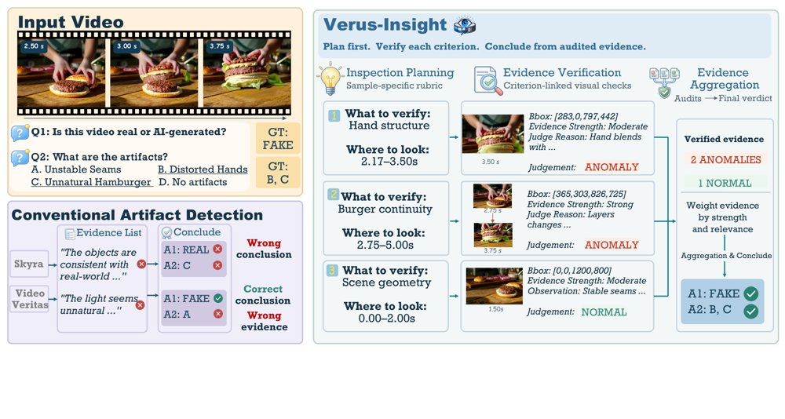
Verus-Insight 依次执行检查规划、证据核验与证据聚合，把真/假判定落在显式核验、人眼可感知的伪影证据上，而非仅给出结论。
解决了什么问题。现有基于伪影的检测器把生成伪影当作判定来源的证据，但常漏掉细微的时空异常，或把正常视觉现象误判为伪影。更关键的是，模型可能给出正确的真/假结论，却没有真正定位到支撑该结论的伪影，因此仅用视频级分类准确率衡量诊断质量并不充分。
方法。作者把伪影检测形式化为检查规划、证据核验、证据聚合三个互补能力，并以 Qwen3-VL-8B-Instruct 为起点，用人工标注的伪影和经独立核验的正常检查项构造「完整流程」监督轨迹。训练分三阶段：区域跟踪与 rubric 规划预热、全流程监督微调、以及以来源正确性为门控、以 Finding F1 为质量项的 GRPO 强化学习。同时发布 Verus-Bench，包含 192 段视频（96 真实／96 生成）与 326 条细粒度人工伪影标注，覆盖 18 个类别。
关键结果。相较 Qwen3-VL-8B 骨干，Verus-Insight 把 RewardData 的平衡准确率从 48.81 提到 94.79，Verus-Bench 从 66.67 提到 89.06，Artifact-Bench T1 从 50.80 提到 66.60。细粒度指标上，Verus-Bench 的 Plan F1 由 17.08 升至 24.70、Finding F1 由 7.56 升至 15.97；RewardData 的 Plan F1 由 18.67 升至 31.33，Finding F1 由 3.38 升至 35.42，其中查找精确率与召回率从 1.87/18.13 变为 33.66/37.36。规划到证据的转化率 P(F=1|P=1) 在 Verus-Bench 上由 45.16% 升至 54.88%，在 RewardData 上由 30.48% 升至 75.58%，同时真实视频上的严格伪影假阳性率最低；Any-Hit 由 33.68% 升至 46.32%（Verus-Bench）、由 19.21% 升至 45.03%（RewardData）。跨数据集 ViF-CoT-4K 子集上 Plan F1 为 35.27，Finding F1 为 14.02（VideoVeritas 8.08、BusterX++ 5.34）。
为什么值得看。它把「解释」从附加的自然语言说明变成可逐条核验的证据链，使检测器不仅能判真假，还能指出具体在哪个时空位置、出了什么生成错误，这对内容溯源与生成质量诊断更实用。同时它提供了超越视频级准确率的评估方式，即 Plan F1、Finding F1 与转化率。
局限 / 存疑。并非全面领先：Artifact-Bench T2 上 Verus-Insight 为 45.60，低于 VideoVeritas 的 50.40 与 Gemini-3.6-Flash 的 62.00；ViF-Bench 为 60.51，也低于 Skyra 的 63.81。论文自己的消融显示，去掉 Stage-II 显式 rubric 后视频级 BA 反而上升（Verus-Bench 89.06→90.63，RewardData 94.79→96.07），说明分类与伪影理解并不一致；在 RewardData 上，小空间区域的召回仍低于 VideoVeritas。评估侧的伪影提取与语义匹配全部由 Gemini-3.1-Pro 自动完成，作者也承认这些匹配不构成独立的人工一致性测量，且 Plan 与 Finding 的匹配不使用时间与框的重叠信息，定位质量本身未被直接评分。
计算机视觉 CV
alphaXiv · arXiv
“wait”多为继承：零RL很少发明反思标记
追踪开放模型训练史发现，“wait”多随数据进入，零RL很少创造它。
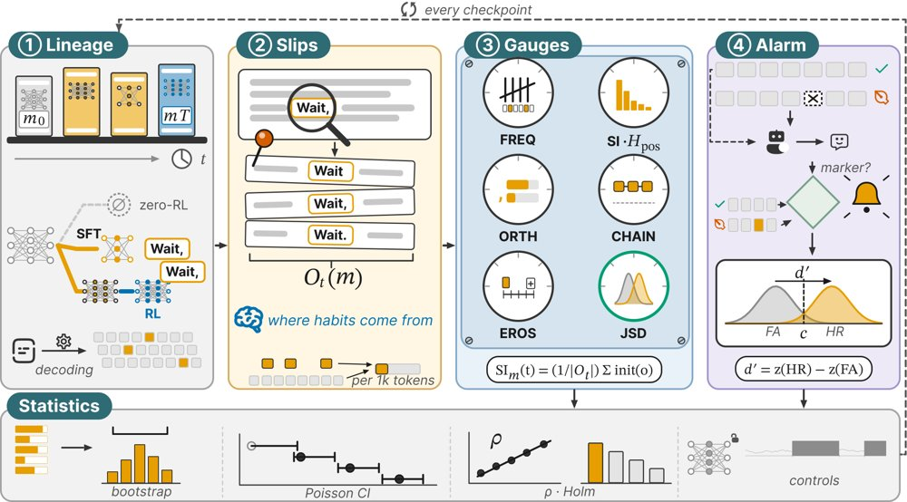
方法从各检查点的出现记录中逐段重建标记的演化史，并构建无标签指标与注入错误告警测试。
解决了什么问题。强化学习常被认为教会推理模型在回头检查前写“wait”，但大幅的RL准确率提升并不需要这个词。这容易把RL发现的行为与模型从训练数据继承的内容混为一谈。
方法。作者把同一模型各检查点的采样输出视为历时语料，用频率、位置、形式和用法等无标签指标追踪“wait”。流程将模型谱系与采样轨迹匹配为出现事件，并在每个检查点做统计和注入错误告警测试。
关键结果。在缺少该词的基础模型上，零RL能显著提高MATH-500准确率，但“wait”在多数运行中仍低于每千token 0.05次；标记主要随OLMo-3中训练或推理轨迹微调进入。基础模型已会使用时，OLMo-3、MiMo的RL-Zero配方会成倍放大它，而同基座的KL-free GRPO不会；OLMo-3配方还削弱其形式，使其成为更敏感也更宽松的告警。作者分析了9,000条RL-Zero轨迹等采样序列，并发现仅凭标记频率不能判断RL诱导的推理。
为什么值得看。这说明反思标记的频率本身不足以证明RL带来了推理能力，也提醒研究者慎用LLM-as-a-judge的修订指标，因为自动评审可能反转人工标注的趋势。
局限 / 存疑。结论主要来自“wait”这一标记、开放模型和采样输出的正则匹配，属于观察性追踪，难以单独识别因果。gpt-oss-120b的训练未公开，且不同模型族的训练配方差异会混淆比较。
基础大模型 & 基础模型底层研究
强化学习 RL & 序列决策
alphaXiv · arXiv
让MLLM潜变量真正驱动电影级视频生成
FAPL用三阶段训练把MLLM潜变量变成唯一内容条件，在稀疏到视频、因子编辑、多镜头三项任务上均超过UniVideo与O
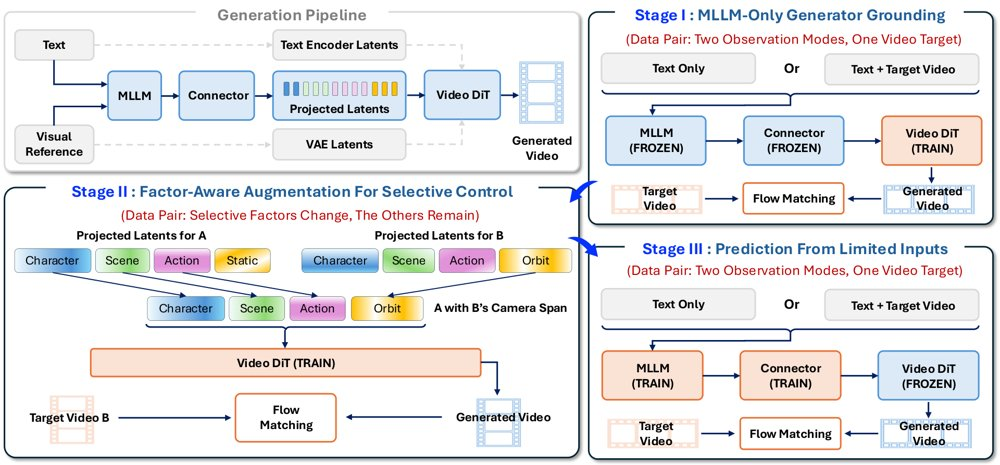
FAPL框架总览：Stage I冻结MLLM与connector、用MLLM潜变量训练DiT；Stage II保持该配置并在成对样本间交换因子专属输出span以监督因子相关变化；Stage III冻结已训好的DiT，通过视频重建联合更新MLLM与connector，且纯文本输入与文本加完整视频输入共享同一生成目标。
解决了什么问题。现有MLLM-conditioned视频DiT虽然接入了MLLM隐状态，但原生文本编码器与VAE参考通路可以让DiT在不依赖MLLM潜变量的情况下降低生成损失，特征接入不等于特征生效。同时，普通视频级监督并不指明某个因子对应的MLLM片段被改动后输出该变什么、该保留什么；而冻结MLLM、只调connector和DiT的做法，也没有训练MLLM本身从稀疏输入产出对生成有用的时序表示。
方法。作者提出Factor-Aware Predictive Learning（FAPL），三个阶段都只把MLLM潜变量作为内容条件。Stage I冻结MLLM与connector、只训DiT，用text-only和text+完整视频两种观测做潜变量接地；Stage II保持MLLM冻结，把结构化提示中character、scene、action、camera四个字段对应的投影潜变量span在成对样本间互换，让目标视频监督被替换因子的改变与非目标内容的保持；Stage III冻结训好的DiT，用共享同一视频目标的两种观测联合优化MLLM与connector，使梯度穿过固定生成器回传到理解分支。
关键结果。在13B DiT的UniVideo上搭建FAPL，与Omni-Video 2（1.3B、14B）和UniVideo（13B）对比：Motion Order为61%对UniVideo的48%，Translation Error 0.0586对0.0763，Rotation Error 1.02 rad对1.54 rad，因子编辑∩-Acc为58%对42%，Subject Consistency 0.516对0.462，Scene Consistency 0.471对0.427，多镜头FaceSim-Arc为0.523，而Omni-Video 2（1.3B）为0.412、（14B）为0.468，UniVideo为0.451。消融显示Stage II使用因子span替换时∩-Acc为57%，同数据同预算下不做替换为48%，但Motion Order与相机误差未随之改善；Stage III改用混合观测后Motion Order由57%升至61%，平移与旋转误差分别从0.0629降到0.0586、从1.26降到1.02 rad，编辑精度由57%微升至58%。训练数据为10万条质量过滤的源–目标视频对（每个因子2.5万），推理用50步采样、CFG 5.0。
为什么值得看。论文把问题定位在「MLLM潜变量被旁路」而非架构缺失，并给出不改结构、用固定生成器反向塑造理解模型表示的训练路径，这为理解–生成联合建模提供了一个可复用的监督范式。Stage I的增益在图7中也出现在Omni-Video 2的1.3B与14B上，提示该接地策略并非只对单一backbone有效。
局限 / 存疑。作者自己承认性能仍受底层模型限制：当前MLLM难以理解3D blockout或推理复杂相机运动，预训练DiT也限制了视觉保真度与真实表演等复杂因子的实现。此外评测主要基于作者构建的CineFactor-10K与ShotVerse-Bench，因子干预依赖把caption改写成四字段结构化提示，这一假设在自由文本场景下的适用性文中未给出验证。
生成式 AI
alphaXiv · arXiv
块级参数记忆DFM：免检索注入解码器隐状态
上海交大等提出DFM，用块级监督训练参数化记忆，并在解码器中间层融合；推理不需检索。
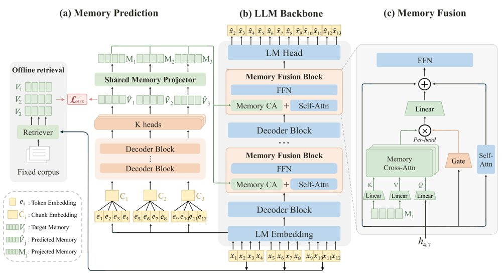
DFM总览：记忆预测器由离线目标记忆监督，共享投影器把预测记忆送入选定解码器层，经逐头门控交叉注意力与自注意力并行融合，推理无需检索。
解决了什么问题。大模型需要外部知识，但继续预训练可能灾难性遗忘，推理时检索又带来额外开销。已有参数化记忆免在线检索，却依赖昂贵的token级检索监督，且多在输出概率层做浅融合。
方法。DFM把文本切成块，用因果记忆预测器从先前上下文生成块级记忆，并以离线检索到的块嵌入作为监督。预测记忆经共享投影后，通过带门控的交叉注意力注入选定解码器层，与自注意力并行。骨干网络冻结，记忆预测与融合用语言建模损失和MSE联合端到端训练，推理不做检索。
关键结果。在六个QA任务上，DFM平均分在Mistral-7B-v0.3上从最强基线24.14升至27.21，相对提升12.71%；在Qwen3-8B-Base上从23.80升至26.46，提升11.19%。域适应中，Qwen3-4B-Base和Qwen3-8B-Base平均分别提升6.51和4.38分。相比token级方案，构建数据所需检索查询少32倍、检索条目少2048倍；新增参数0.75B（约少50%），训练约24小时对64小时，降62.5%。
为什么值得看。它把外部知识写进可预测的参数记忆并注入中间隐状态，推理无需检索，有望降低知识更新与领域适配的在线成本。
局限 / 存疑。但Qwen3-8B上WebQA从41.78降至39.47，Mistral上2Wiki也低于RAG（25.00对31.02）；消融多为单次运行，未测目标构建的实际耗时，代码尚未发布。
基础大模型 & 基础模型底层研究
alphaXiv · arXiv
可微世界模型训练人形控制器，省逾千GPU小时
论文用一个可学习的可微世界模型来训练人形机器人全身控制器，称相比集群规模的无模型强化学习可节省逾1000个GPU小时。
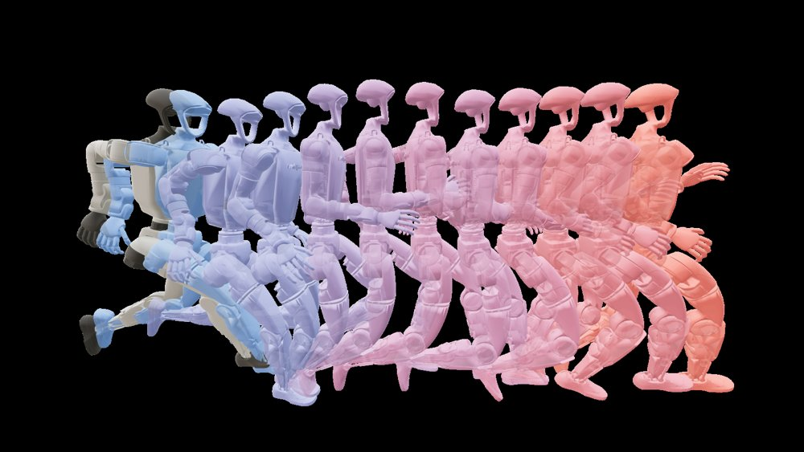
左：策略通过世界模型的想象rollout不断改进；右：SONIC用128块L40训练168小时，本工作用单块H100训练3小时。
解决了什么问题。人形机器人全身控制器的无模型强化学习通常需要集群级算力：图注给出的对照工作SONIC（luo2025sonic）用128块L40 GPU训练168小时。这种算力门槛让复现和迭代代价很高。论文要问的是，能否用学到的世界模型把大部分训练搬到「想象」里完成。
方法。论文训练一个可微的世界模型，让策略在世界模型的想象rollout中改进，而不是在真实或仿真环境中做大规模无模型试错。图注称整套训练在单块H100上只需3小时。世界模型的结构、训练数据与策略优化细节，论文材料未给出。
关键结果。图注给出的对照是：SONIC用128块L40 GPU训练168小时，本工作在单块H100上训练3小时；作者据此称相比集群规模的无模型强化学习减少超过1000个GPU小时。除此之外，论文未给出具体数字。
为什么值得看。如果世界模型能撑起全身控制这类高维连续控制任务，人形机器人策略训练的门槛会从「集群」降到「单卡」，更多实验室就能参与迭代。这也为把可微模型用作策略学习的替代环境提供了算力层面的证据。
局限 / 存疑。这一对比涉及硬件类型不同（L40与H100）且只针对SONIC一个基线，GPU小时之差不能直接等同于方法效率之差。本次提供的材料只有图注、没有正文，真机迁移效果、任务泛化范围与世界模型误差累积等问题论文未给出具体数字，结论仍需核实。
alphaXiv · arXiv
跨层共享专家让 MoE 少用两三成专家
清华与上海 AI Lab 提出 Meta Expert：让各层共用同一专家池，在激活量固定时用 70–80% 的专家追平
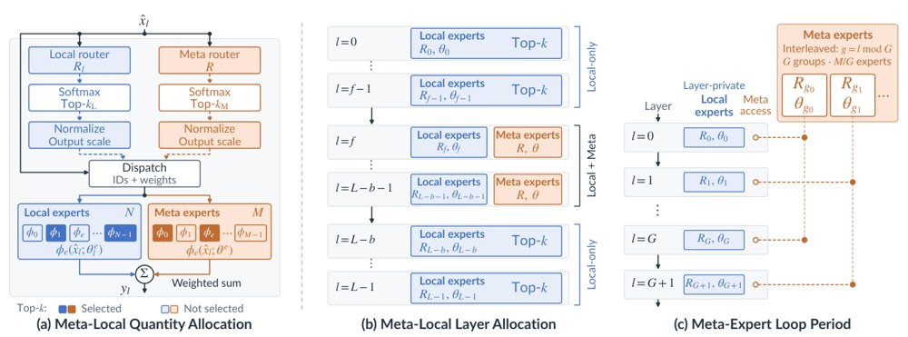
Meta Expert 与 Local Expert 在数量配比与拓扑结构上的对比实验。
解决了什么问题。主流 MoE 模型按层各自配置私有专家（Local Expert），但已有可解释性研究表明不同层存储的知识高度相似，层间存在明显冗余。现有做法多沿宽度方向提升参数效率，也就是增加专家数；深度方向的参数复用则主要靠 Looped Transformer，需要额外递归并增加串行深度，因而带来计算与延迟代价。
方法。作者把专家池从「每层私有」改为「跨层共享」：所有层共用一套路由器和专家池（Meta Expert），每层仍按 top-k 稀疏激活，激活参数与计算量不变，只减少总存储。作者在 2B-A0.5B 模型上扫描 Meta/Local 的数量比（25%/50%/75%/100%）、激活比（25%/50%/75%）与拓扑（边界层是否保留 Local、共享池是否再切成 2/4/8 个子池循环使用），再沿 12/16/20/24 层的算力阶梯验证。作者还提出用 CKA 核谱的 Gini 系数作为专家冗余度指标，并从残差通路角度做了理论分析：共享块让各层在激活层面获得路径长度为 O(1)、与层距无关的双向读写通道。
关键结果。在激活专家数与专家粒度固定的条件下，「只用 70–80% 的专家」即可匹配 Vanilla MoE 的性能；按摘要给出的口径，参数量只需 75–90%，但正文第 3.4 节又写成省下约 20–30% 的专家（15–25% 的参数），两处数字口径不一致。6B-A1.6B 模型训练 200B token 后，MMLU 上 Vanilla 为 0.4087，MR75 为 0.4120，MR75+Loop2 为 0.4175；C-Eval 上从 0.4354 升到 0.4487；OpenBookQA 上从 0.3500 升到 0.3640；TriviaQA 上最佳为 MR75+F2L2+Loop2 的 0.2042，Vanilla 为 0.1924。消融显示，把首尾各两层限制为 Local Expert 并叠加 2 个子池（F2L2+Loop2）时，损失与冗余度相对 Vanilla 的比值随算力增长而持续改善。
为什么值得看。该结果说明，深 MoE 长期被当作固有成本的层间专家冗余可以被转化为有效容量，而且共享只发生在 FFN 专家块上，不引入递归，训练与推理仍保持标准 Transformer 的并行性，是一条与宽度扩展正交的扩容路径。
局限 / 存疑。下游验证只做了 6B-A1.6B、200B token 这一档，作者自己承认预算有限，导致不同 Meta 变体在不同数据集上各有胜负，而且 MR75+F2L2 在 MMLU 上（0.3928）反而低于 Vanilla（0.4087）。纯 Meta（100%）配置被认为可能训练不稳定；理论部分只刻画了读写通路与路径长度，并未保证信号不衰减；轻度分层共享专家带来的冗余为何不转化为更高损失，作者也明确留作未解问题。
基础大模型 & 基础模型底层研究
alphaXiv · arXiv
一个LoRA把方块游戏渲染成成品画面
Alaya Lab 用 LoRA 微调 MiniMax-H3，把灰色方块游戏视频渲染成成品画面，同时保住每个实体的位置与
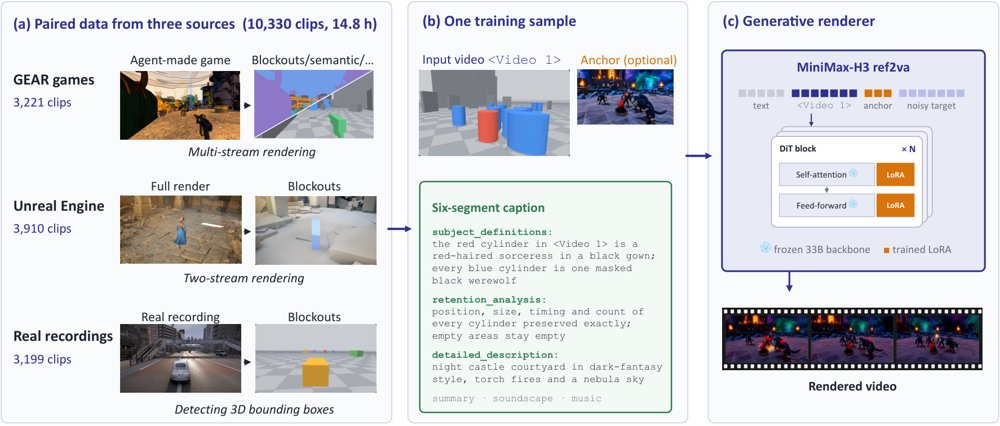
AnyGameRenderer 总览：(a) 来自 GEAR 多流渲染、Unreal Engine 双流渲染与真实录像 3D 框重建的三类配对数据；(b) 一个训练样本，由粗糙视频、目标首帧锚点和六段式 caption 组成；(c) 冻结的 MiniMax-H3 DiT 只训练自注意力与前馈层上的 LoRA。
解决了什么问题。AI 编码智能体已能在几分钟内生成可玩的游戏，但画面往往是「程序员美术」：灰色方块、彩色几何体和纯色语义块。现有生成式渲染器大多依赖 G-buffer、逐物体类别标签或低模代理这类昂贵表示，且只在帧级别评测，无法判断每一个实体是否被正确渲染。
方法。作者把游戏渲染当成参考视频编辑任务：以粗糙游戏录像作为参考视频、六段式 caption 说明每个粗糙形状代表哪个实体，用 rank-128 LoRA 微调冻结的 33B MiniMax-H3 ref2va，只训练自注意力与前馈层。训练数据共 10,330 段 124 帧、1344×768 的配对片段，来自三处：GEAR 的 38 款智能体自制游戏（3,221 段）、Unreal Engine 双流渲染（3,910 段，脚本化设计同色群体数量变化与 20–600 像素的实体尺度）、以及经 3D 框检测重建的真实游戏录像（3,199 段）。caption 由引擎元数据程序化生成，并刻意保留「列出但未出场角色」的噪声，迫使模型从视频而非文本判断实体是否存在。
关键结果。在自建的 59 个留出案例、753 个实体的基准上，相比零样本基模型，时间匹配率从 50.9% 升至 62.9%，位置匹配率从 57.1% 升至 61.9%，未渲染率从 4.1% 降至 2.9%，幻觉率从 52.1% 降至 46.0%；按时出现率从 55.9% 升至 67.6%，从未出现的实体比例从 26.0% 降至 20.2%，漏检的数量变化从 34.7% 降至 21.3%。分数据源看，Unreal Engine 双流案例的时间匹配率达 96.6%，接近真值管线上限 98.5%；真实录像提升最小，时间匹配仅从 46.5% 到 51.1%。
为什么值得看。若渲染层能从纯视频出发并保持实体一致，游戏只需代码和 blockout 就能更换美术风格，跳过建模、贴图与动画；论文同时补上了以往缺失的实体级评测口径。
局限 / 存疑。真实录像子集提升有限，未渲染率反而从 2.6% 微升至 2.9%，漏检数量变化停在 20.0%；幻觉率仍有 46.0%，而真值管线上限本身就有 34.1% 的幻觉率，说明基于 SAM3 开放词表分割与匈牙利匹配的评测流程本身误差不小。俯视视角仍是最难的类别，幻觉率在俯视和第三人称类别上还有上升，且所有结论只覆盖 5.17 秒、24fps、768p 的短片段。
生成式 AI
计算机视觉 CV
alphaXiv · arXiv
单次前向直出类别级位姿、尺寸与相机系形状
F2G-Pose 把冻结 RADIO 的密集视觉特征逐点提升到部分点云，单次前向回归类别级 6D 位姿、尺寸与相机系形状
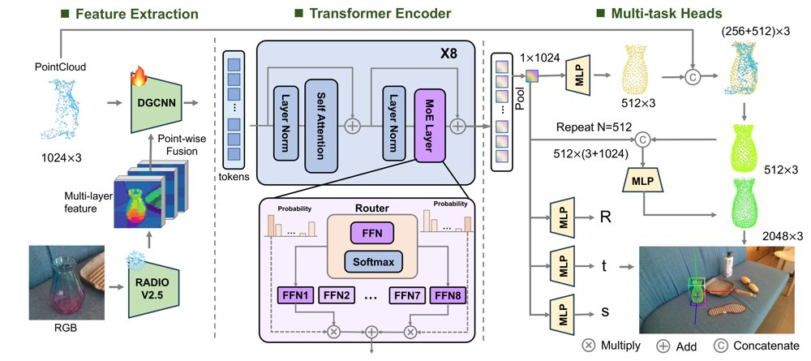
F2G-Pose 流程：裁剪 RGB 图与分割部分点云经 RADIOv2.5 特征提取并按投影逐点提升，DGCNN 令牌化后由 MoE Transformer 编码全局表示，两个并行解码分支在一次前向中分别输出 6D 位姿与度量尺寸、以及由粗到细的相机系补全形状。
解决了什么问题。类别级 RGB-D 位姿估计要在没有实例 CAD 模型或参考视图的情况下恢复物体的旋转与平移，而类内差异、对称性和单视角部分观测让该任务高度歧义。已有方法难以兼顾可靠性与效率：依赖规范化坐标、对应关系或形状先验的中间结构类方法容易误差累积，扩散类方法则需要迭代采样并配合事后候选筛选或聚类，推理延迟高。
方法。模型取冻结 RADIOv2.5 第 8/16/23 层特征加权融合，按投影关系把逐点视觉特征贴到分割后的部分点云上，再用 DGCNN 把 1024 个点令牌化为 128 个 512 维 token。随后由 8 个 Transformer 块（前馈层换成 8 专家、top-2 路由的 MoE，并加负载均衡损失）编码全局物体表示，两个并行解码头分别直接回归 6D 旋转（连续 6D 表示）、平移与度量尺寸，以及相机坐标系下的补全形状。形状分支先预测 512 个粗点，与最远点采样的观测点拼接打分后融合，再为每点预测 4 个局部偏移，输出 2048 点稠密形状，用 Chamfer-L1 与位姿/尺寸的 Smooth L1 联合训练。
关键结果。仅用 SOPE 的 149 类合成数据训练：SOPE 上 IoU50 AUC 为 43.7（GenPose++ 为 31.9），IoU75 为 16.5（GenPose++ 为 6.4），平均旋转误差 15.7°、平移误差 0.88 cm（GenPose++ 为 19.9°/1.14 cm）；ROPE 上 IoU25/50/75 分别为 46.5/27.8/5.8，5°2cm VUS 为 11.3。位姿单模推理 28 FPS，含形状补全的完整模型 23.7 FPS，而 GenPose++ 为 4 FPS。相机系形状补全的 Chamfer-L1 在 SOPE 为 5.42×10⁻³、HouseCat6D 为 7.1×10⁻³，对比 AdaPoinTr 的 24.41 与 32.3。HANDAL 上零参考迁移 IoU25/50/75 为 35.0/11.7/0.3。ARX 真机抓放 80 次试验中成功抓取 74 次、放置 68 次，平均感知延迟 36 ms。消融中去除 RGB 基础特征后 ROPE IoU25 从 46.5 降到 34.5，去除 MoE 降到 41.0，去除形状监督降到 39.5。
为什么值得看。它把「采样候选—打分筛选」的生成式流程换成一次前向的确定性预测，在保持实时性的同时把精度推到 SOPE/ROPE 的当前最好水平，并在真机抓放中满足 50 ms 控制预算。相机系形状补全既作为稠密几何监督提升位姿精度，也可直接供下游规划与碰撞检查使用。
局限 / 存疑。方法假定推理时已有分割好的 RGB-D 裁剪，掩码失败或深度严重损坏会传导到位姿、尺寸与形状；作者也承认对细长/非对称部件、严重遮挡和低纹理对称物体敏感，跨数据集高精度对齐仍弱（HANDAL IoU75 仅 0.3），且不提供校准不确定度或拒识机制。评测只在 SOPE 训练，ROPE 与 HANDAL 属已见类别、未见实例的迁移，并非未见过类别的泛化。
计算机视觉 CV
alphaXiv · arXiv
频谱合并子词嵌入：零音频扩展TTS词表
SEAM 不需要目标语言音频，只用子词嵌入的频谱合并与闭式岭回归为新词元初始化，在三种语言上以最多四分之一的数据逼近基线
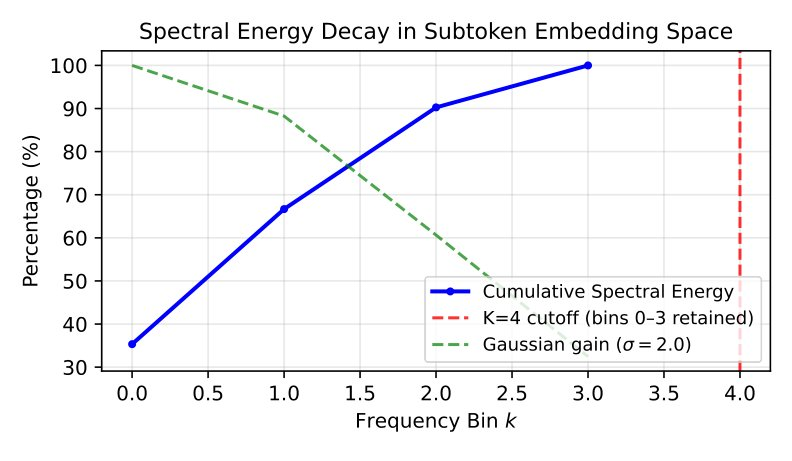
子词嵌入序列的频谱能量衰减：累计能量在 k=3 时已超过 99%，σ=2.0 的高斯滤波保留 k∈{0,1,2,3} 四个频点并压制高频边界噪声。
解决了什么问题。条件式 TTS 模型扩展词表时，新音素或字素单元通常随机初始化，再用大量配对音频微调，这在低资源语言上几乎不可行。现有做法是把未见词元拆成已知子词再取平均，但平均池化对顺序不敏感，丢掉了语音合成所需的时序结构与发音动态。
方法。SEAM 把子词嵌入序列的每一维当作离散信号，做 DFT 后用高斯低通滤波（默认 K=4、σ=2.0）保留低频分量，再把实部与虚部拼成特征向量。随后用闭式岭回归（λ=1e-6）把特征投影到预训练条件流形上，训练对来自旧词表自身的 BPE 分解，因此完全不需要目标语言音频，也不需要梯度优化。对非拉丁文字，先转写成英语 IPA 再做子词分解。
关键结果。在 Chatterbox 上，俄语 5 小时预算下 SEAM 的 CER 为 14.88%，随机初始化为 20.80%、平均池化为 17.53%；25 小时预算下，SEAM 比平均池化分别低 2.22（俄语）、10.63（哈萨克语）、0.87（法语）个 CER 点，比随机初始化低 9.16、27.34、3.77 点。哈萨克语 100 小时 SEAM 的 CER 为 4.39%。作者称这相当于最多 4 倍的数据节省，但 100 小时预算下各方法已收敛：俄语 SEAM 为 7.68%，略高于随机初始化的 7.62%；法语 SEAM 为 9.26%，略高于平均池化的 9.06%。人评用 25 小时训练的 SEAM 对比 100 小时训练的平均池化，非平局偏好率俄语 61.4%（p=0.041）、哈萨克语 65.1%（p=0.002）、法语 70.6%（p<0.001）；在 VibeVoice 上，俄语 5 小时的 CER 为 6.14%，低于平均池化的 8.34% 和随机初始化的 9.26%。
为什么值得看。词表扩展是低资源语言接入 TTS 的第一道门槛；SEAM 把这一步变成一次无需音频、无需梯度优化的线性求解，轻量且可复现，便于快速跨语言部署。
局限 / 存疑。方法依赖可靠的子词分解与 IPA 转写，转写错误会直接传进条件空间，而且它只解决初始化，后续仍需目标语言音频微调；人评每种语言只有 5 名母语者、25 条语句，极低资源下训练集与测试集的词级重叠还会让指标非单调（哈萨克语随机初始化从 5 小时到 25 小时由 11.62% 升到 32.60%）。
语音与音频 AI
alphaXiv · arXiv
用 Lean 逐步检查化学推理
MolLean 把分子状态当作推理锚点，让 Lean 内核逐步校验化学操作与断言，在 12 个任务、8,800 个样例上
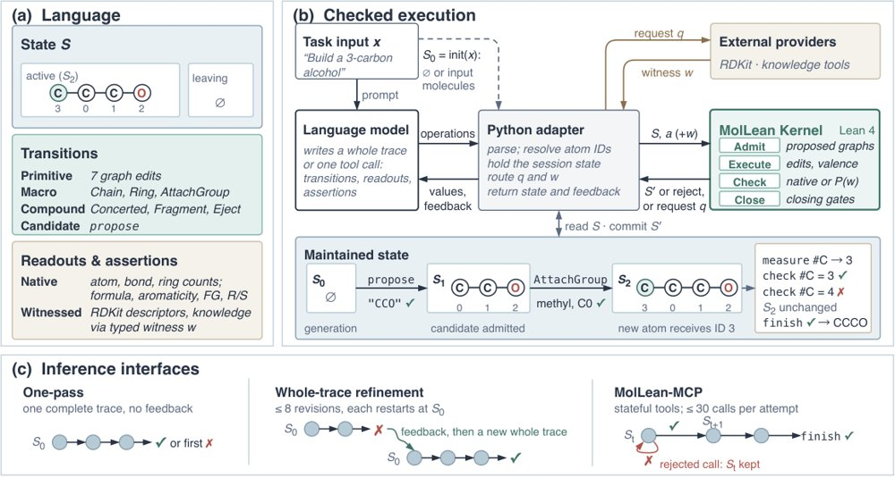
图 1：MolLean 的语言、执行契约与推理接口——状态与转移族及只读查询（a）、适配器只提交被 Lean 接受的后继状态并示例乙醇到 1-丙醇的构造（b）、以及 One-pass、Refinement 与 MCP 三种接口（c）。
解决了什么问题。化学思维链里经常出现凭空捏造的结构与性质断言：模型会引用分子里并不存在的官能团、跟丢某根键，或声称某性质得到改善却从未验证。这类错误针对的是模型自己陈述的化学内容，与解释不忠实于真实决策过程属于不同的失效模式。论文要回答的是：一种化学推理语言必须表示什么，它的每一步才可被检验。
方法。MolLean 把推理写成针对一个被维护的分子状态的操作序列：转移（构造、编辑、片段分离等）修改状态，读出与断言只观察状态而不修改它；每一步都送进 Lean 内核检查，只有被接受的转移才会提交新状态，被拒绝的步骤不改变当前状态。结构类断言（原子数、键数、环数、分子式、芳香性、官能团、R/S 立体中心）由 Lean 原生判定；涉及描述符或外部知识的断言则通过类型化的 witness 协议，由 RDKit 等外部提供者返回字段、Lean 在其上检验谓词。系统提供三种推理接口：一次生成完整轨迹的 One-pass、从初始状态重写被拒轨迹的 Refinement，以及带状态工具、可逐步获得反馈的 MolLean-MCP。
关键结果。评测覆盖 12 个任务共 8,800 个匹配样例（S2-Bench 九项各 500 例、USPTO-50k 正向与逆合成各 500 例、ChEBI-20 全部 3,300 例测试集）。Qwen3.6-27B 上，Refinement 相对直接 CoT 在全部 12 个任务上都有提升，按各任务二元成功标准计为 12.0–48.2 个百分点：原子计数从 42.0% 升到 88.8%，键计数从 20.8% 升到 69.0%，组分添加从 55.8% 升到 100.0%，ChEBI-20 从 18.1% 升到 33.1%，逆合成从 3.0% 升到 20.8%。MCP 在反应任务上更好，正向反应 66.4%、逆合成 27.4%，而 Refinement 分别为 62.8% 与 20.8%。但接受率与正确率分离明显：ChEBI-20 上 Refinement 轨迹 soundness 达 79.0%，其中 1,075 条既 sound 又正确、1,533 条 sound 但不正确。Qwen3-4B 上结构类任务增益明显（原子计数 15.8%→56.8%，组分添加 13.4%→91.4%），但逆合成在所有协议下都是 0.0%。
为什么值得看。它把「可执行的化学承诺」与「自由文本解释」分开：构造、变换、观测共享同一套分子指称，失败的操作会留下可诊断的拒绝理由，从而让修复有明确对象，而不只是模型自我批评。作者也指出，soundness 与答案正确率是两个独立指标，接受一条轨迹并不保证它满足用户的原始指令。
局限 / 存疑。论文自己把「任务保真度」列为主要短板：ChEBI-20 上 1,533 条轨迹执行完全合规却答案错误，盐酸盐案例中修订版直接删掉氯离子和对应的计数义务后仍被接受，说明自我提出的 OutcomeMatch 无法恢复被丢弃的约束；此外外部 witness 的提供者返回值被信任，描述符质量受 RDKit 制约，小模型在依赖化学知识的参考生成任务上几乎无收益。
时序数据 & 科学 AI
alphaXiv · arXiv
骨架引导潜在动作提升机器人世界模型
SkeLAM 将视频潜在动作拆成骨架监督的运动学分量与残差分量，在 DROID 上降低末端执行器误差和 LPIPS。
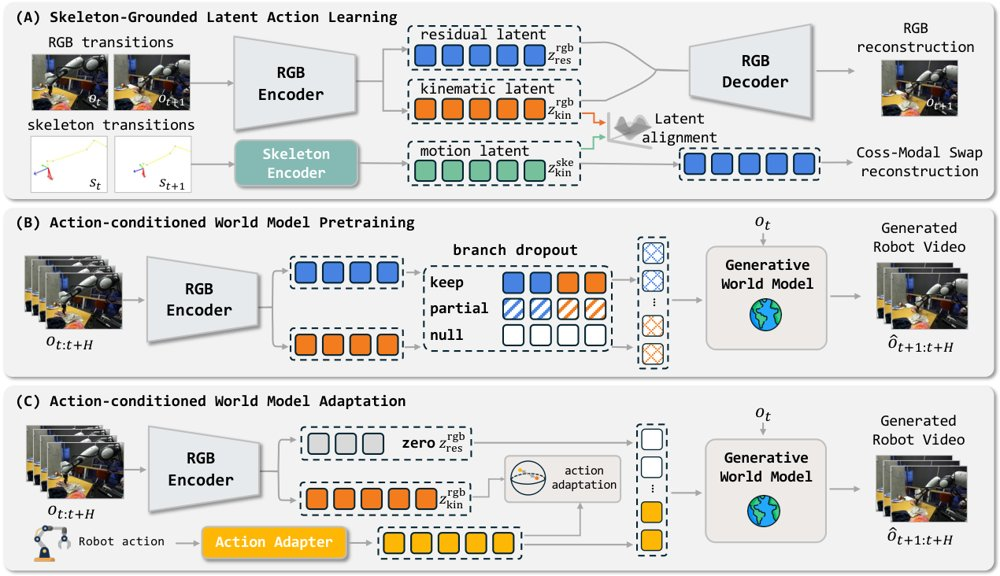
SkeLAM 总览：骨架监督与跨模态交换重建把 RGB 迁移潜变量分解为运动学与残差分量，世界模型通过独立投影和分支 dropout 接入，动作适配器在推理时预测运动学潜变量而残差置零。
解决了什么问题。从视频重建学习到的潜在动作会把机器人运动、物体响应和其他场景变化混在一起，因而难以与机器人控制量建立稳定对应。世界模型又需要同时预测机器人运动和场景动态，直接拿这种混合表示做动作适配会增加场景相关变化。
方法。SkeLAM 用机器人骨架监督把 RGB 迁移潜在动作分解为运动学潜变量和残差潜变量，并通过跨模态交换重建让 RGB 解码器兼容骨架运动条件。世界模型用独立投影分别接入两个分量，训练时做分支 dropout，为部署时残差置零做准备。一个轻量动作适配器把机器人动作映射到运动学空间，再微调世界模型生成未来观测。
关键结果。在 DROID 的 400 个片段上，SkeLAM 的末端执行器 ADE 为 41.15 px，较 DreamDojo 的 51.11 px 降低 19.5%，LPIPS 从 0.1473 降至 0.1310（降低 11.1%）；相比 CD-LAM，ADE 和 LPIPS 分别降低 23.7% 和 17.4%。消融中移除骨架监督使 ADE 从 41.15 升至 64.59，移除跨模态交换重建升至 66.74；线性探针下运动学分量的 EEF MAE 为 5.99×10⁻³、R² 为 0.3200。开环策略评估的成功召回率为 33.33%，平衡准确率 63.02%，成功率 MAE 为 4.76 个百分点。
为什么值得看。把动作适配目标限制在骨架监督的运动学潜空间，可以让世界模型用机器人动作而非未来帧残差来驱动生成，这对策略评估和模型规划更可控。跨模态交换重建也提供了一种在视频潜在动作中注入结构化运动先验的通用思路。
局限 / 存疑。论文的 DROID 增益没有均匀迁移到 AgiBot：SkeLAM 的 SSIM 为 0.8479，高于 DreamDojo 的 0.8330，但 LPIPS 0.1049 差于 0.0889，ADE 21.10 也高于 19.55。策略评估仍是开环动作回放，成功召回率仅 33.33%，人类到机器人迁移也只有两个定性例子。
机器人 & 具身智能
alphaXiv · arXiv
序列压缩即测试时回归：新压缩器提升长上下文检索
研究者把序列压缩重新表述为测试时岭回归，用对偶 Cholesky 闭式解直接算出压缩表示，每个压缩器仅 2d 个可学习参

TTR-Compressor 总览：(a) 双层学习——内层把序列压缩写成测试时岭回归，用对偶 Cholesky 精确求解得到表示 h*，外层用任务梯度端到端学习回归参数；(b) 通过 Gram 矩阵把 token 联合耦合，相比加性池化，冗余 token 的相对影响被削弱。
解决了什么问题。现有的序列压缩器——均值池化、拼接后学习投影、注意力加权池化——都用不考虑 token 间关系的权重来聚合 token：均值池化用均匀权重，投影用固定的位置相关权重，注意力池化则对每个 token 独立打分。结果是冗余 token 相互叠加、相互强化，而真正独有的信息被稀释。作者指出，从统计上看，这些方法只用到一阶 token 统计量，忽略了 Gram 矩阵所刻画的二阶 token 间相关性，而后者恰恰能揭示哪些信息冗余、哪些信息独特。
方法。TTR-Compressor 直接用输入 token 构造一个无需外部标签的岭回归问题：键取归一化后的特征，标量目标由共享的学习投影给出，回归的拟合系数就作为压缩表示。压缩窗口通常小于特征维度，因此内层用 T×T 对偶形式做一次 Cholesky 分解精确求解；外层则把目标投影和可学习对角正则矩阵 D（由 softplus 参数化）通过任务损失端到端反传，形成双层优化。键做归一化、而目标保留原始 token 范数，是这一设计的关键：若目标也归一化，拟合项会退化为让 h* 坍缩到与输入无关的静态向量。
关键结果。在块稀疏注意力设置下（345M 参数模型、8K 上下文、约 30B token 训练），TTR-Compressor 的 RULER 平均分为 0.5092，带卷积的版本为 0.5144，而最强基线注意力加权池化为 0.3920，即领先 12.24 个点；32K 长度的 S-NIAH-1 上，带卷积版本达到 0.988，基线为 0.740。附录把规模扩到 1B 参数、100B token 后，平均分为 0.7996，对照的注意力加权池化为 0.735。视觉 token 合并中，2×2 分组的平均分从 MLP 的 54.93 提到 55.92，带卷积为 56.03；3×3 分组从 52.27 提到 54.85（带卷积），比 MLP 高 2.58 点。文本密集基准上，3×3 卷积变体相对 MLP 在 OCRBench、InfoVQA、ChartQA 上分别提升 4.10、4.54、3.56。摘要称其在 55.6% 更少的视觉 token 下达到 MLP 相当的性能。
为什么值得看。序列压缩是块稀疏注意力和多模态大模型中的关键信息瓶颈，而一个只有 2d 参数、可直接替换池化或投影的算子，意味着不必改动架构就能改善长上下文检索与视觉 token 的利用效率。它把「压缩」从静态聚合重新理解为一个依赖输入的推理问题，这一视角可能迁移到其他需要信息瓶颈的模块。
局限 / 存疑。主实验的语言模型只有 345M 参数、约 30B token，1B/100B 的扩展结果放在附录且只对比了一个基线；表 2 的零样本常识推理中，评估上下文太短、稀疏注意力未被激活，压缩器实际不参与推理，TTR 平均 48.16 与全注意力持平，ARC-c 的 23.29 还低于多数基线。方法依赖 T≪d 的前提，且对实现细节敏感：去掉键归一化后平均分从 0.5092 崩到 0.2531，固定 λ 时结果在 0.4238 到 0.5023 之间波动，视觉 2×2 的平均提升也只有约 1 个点。
基础大模型 & 基础模型底层研究
alphaXiv · arXiv
代码视频生成基准：15 个 MLLM 同台评测
Code2Video-Compass 包含 2,104 个任务，覆盖 T2V、I2V、V2V 三种输入，用 12 项客观
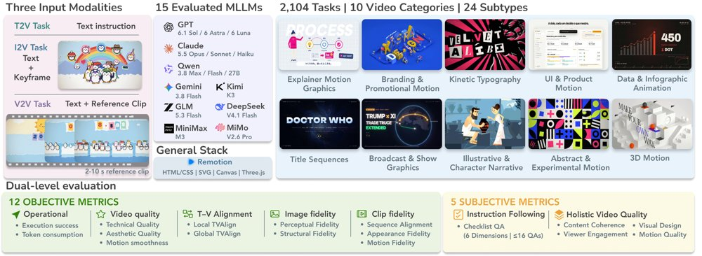
数据构建流程：独立任务集与成对任务集分别来自文本种子、参考图像和完整源视频，经提示构建、QA 清单与主体、事件、运动类型及三维复杂度标注后，共得到 2,104 个任务。
解决了什么问题。基于代码的视频生成能让模型把视觉与时间要求翻译成可执行程序，从而实现细粒度控制、定向编辑和组件复用。但现有代码类基准多面向 Manim 教学视频、SVG 动画、网页动画重建等专门任务，缺少跨创意类别、跨输入模态的完整视频生成评测。
方法。作者从专业动效网站、模板库与创作平台归纳出 10 个类别、24 个子类，并从「结构构建、动态动画、状态依赖」三个维度各分三级标注复杂度。数据由两部分构成：一是依据文本种子与视觉参考独立构建的任务，二是从 573 个完整专业或用户视频派生出的成对 T2V、I2V、V2V 任务，最终合计 2,104 个任务。评测框架含 12 项客观指标（执行成功率、token 消耗、技术质量、美学质量、运动平滑度、局部和全局文本对齐、参考保真度等）与 5 项主观指标（指令遵循加四项整体质量）。
关键结果。论文在 1,054 个固定子集任务（360 个 T2V、347 个 I2V、347 个 V2V）上评测 15 个来自 9 个家族的模型。Claude Opus 5.5 在三种设置下平均排名均为第一，T2V 为 1.60、I2V 为 1.08、V2V 为 1.15；执行成功率区间分别为 T2V 0.52 到 0.94、I2V 0.59 到 0.96、V2V 0.69 到 0.97。T2V 上 Claude Opus 5.5 的指令遵循为 0.91、内容连贯为 4.05；I2V 上其感知保真 PF 为 0.89、结构保真 SF 为 0.66；V2V 上序列对齐 SA 为 0.88、外观保真 AF 为 0.79、运动保真 MF 为 0.44。失败分析覆盖 2,756 个错误样本：编译错误与缺失 API 或依赖占 GPT-6 Astra 失败的 83.4%，缺失 API 单独占 Qwen3.8-Max 失败的 59.7%，运行时异常占 Claude Opus 5.5 失败的 75.0%。复杂度上升时性能普遍下降，SF 在构建复杂度和动态动画复杂度从 L1 到 L2 时分别下降其分数区间的 14.38% 与 12.82%。成本方面，GLM-5.3-Flash 每次请求 90.0k 输出 token 只得到 2.94 的质量分，而 GPT-6 Astra 用 13.9k token 得到 3.62；质量接近的 GPT-6 Astra 与 GPT-6.1 Sol（3.62 对 3.61）中，前者 API 成本约为后者的 6.1 倍。
为什么值得看。它把「代码即视频」从单一专门任务扩展到通用创意场景，并同时衡量执行可靠性与成片质量；结果表明高分模型也可能频繁编译失败，为后续 agent 式修复与长代码生成研究提供了诊断基准。
局限 / 存疑。评测只取约一半记录构成的 1,054 个固定子集，且每个模型仅单次 API 调用、不给执行反馈或修复机会，可能低估具备调试循环的系统；渲染栈固定为 HTML/CSS、SVG、Canvas、Three.js 配合 Remotion，结论未必迁移到其他渲染环境。此外，技术质量、美学等客观分依赖 DOVER++、Aesthetic Predictor 等外部模型，主观分由 Gemini 3.8 Flash 担任评委，其与人类评分的皮尔逊相关仅 0.796（指令遵循）与 0.783（整体质量），并非完全可靠；V2V 输入上 GPT 与 Claude 收到 4 FPS 帧序列、其余模型收到原生视频，也存在输入形式不一致的隐患。
生成式 AI
alphaXiv · arXiv
一个前馈模型同时做驾驶感知与场景重建
研究提出统一前馈模型，用共享表示从环视视频同时做感知与可渲染的 3D 重建。
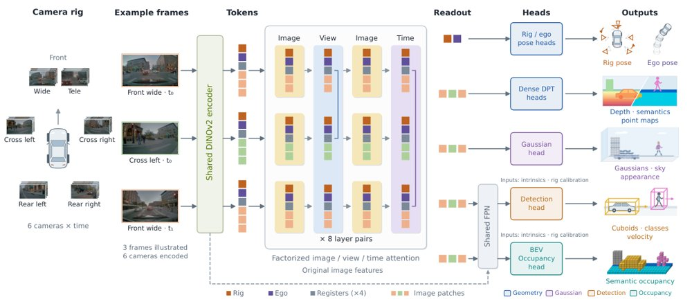
Foundation4D 架构：共享图像编码器与分解式时空注意力融合多相机视频，任务专用解码器分别输出标定、自车运动、深度、3D 目标、语义占用与 3D 高斯。
解决了什么问题。自动驾驶既需要理解环境，也需要为仿真重建场景，二者都依赖场景几何、目标、运动与空间占据信息；目前通常由各自独立的网络反复处理同一批观测。VGGT 这类前馈重建方法能直接从图像恢复相机参数与稠密几何，但它使用的全局注意力随图像 token 总数二次增长，难以扩展到多相机长视频。
方法。论文提出 Foundation4D，用共享图像编码器与分解式时空注意力，在视角与时间两个维度上融合多相机视频观测，避免重复编码。任务专用解码器分别回归相机到车体的标定、自车运动与度量深度，预测 3D 目标及其速度和高分辨率语义占用，并用 3D Gaussian 重建场景外观。
关键结果。在 OpenOccupancy 基准上微调时，评测覆盖 16 个语义类别，体素分辨率 0.2 m，感兴趣区域为 [-51.2, 51.2]×[-51.2, 51.2]×[-5, 3] m；训练 30,000 次更新，初始学习率 3×10⁻⁴ 并采用余弦衰减，批大小 8，时间步长 1，输入图像 1036×1036。定性结果显示，六个原生视角的高斯渲染具有较好多视角几何一致性，在路面纹理、远处背景几何与天空外观上优于 Instant NuRec；但所给材料中的 IoU/mIoU 表格未列出具体数值，论文未给出具体数字。
为什么值得看。如果感知与重建能真正共享一套表示，实车感知与仿真渲染就不必各跑一套网络，同一模型既可理解真实驾驶场景，又能重建出可渲染的新视角。
局限 / 存疑。公开评测目前只在 OpenOccupancy（基于 nuScenes）一个基准上进行，且微调时语义类别与空间范围都与预训练不同；正文未给出 IoU/mIoU 及与基线对比的具体数值，重建质量也主要是定性比较与逐帧 PSNR 展示。
计算机视觉 CV
alphaXiv · arXiv
物理AI的递归自我改进：证据仍缺一环
一篇综述梳理物理机器人迈向递归自我改进的路径，指出行为变好不等于改进过程本身变好。
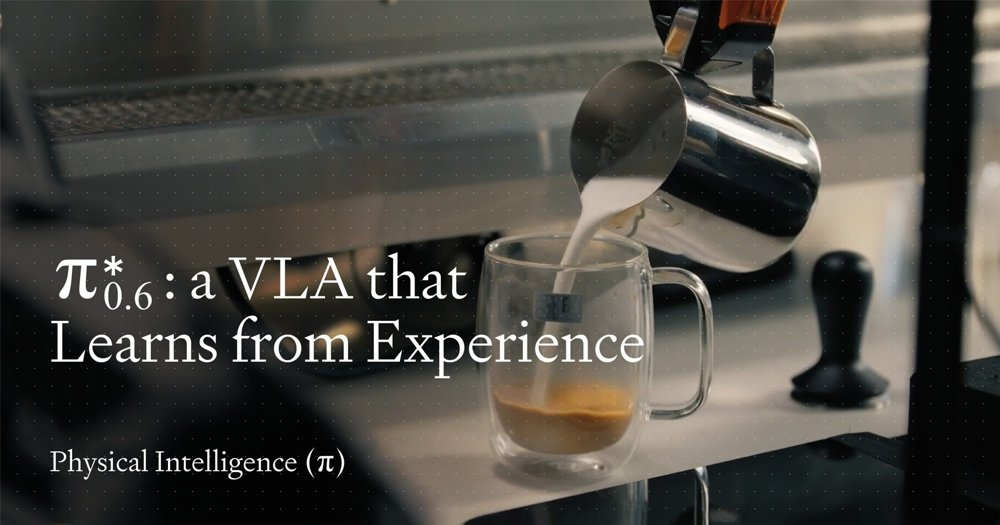
图7：抓取示例中的三类外部知识——保存的滑移修复方案及代表系统，跨机器人复用前需先检查接口。
解决了什么问题。递归自我改进（RSI）指系统不仅改进行为，还改进“产生改进的过程”。机器人领域已有大量从物理经验中提升策略、世界模型和知识的工作，但任务成功率上升或固定流程持续产出更好版本，并不能证明递归发生。真正需要验证的是：保留的改进能否让下一次修订更好，以及修订者能否利用自身所得改进自己。
方法。文章把机器人学习中的自我改进按“论断阶梯”组织：行为提升、后续学习受益、学习过程改进、修订者自我改进，并围绕四个问题梳理证据。它回顾物理经验如何改进策略、世界模型与外部知识，以及学习程序和修订者本身，并分析记忆、技能与代码复用、重置、安全监控与物理约束。作者还用多组控制变量式对比和冻结库实验，讨论保留什么、谁能复用、价值能否跨任务与硬件存活。
关键结果。综述汇总的数字显示外部知识可显著带来增益：PhysMem在模拟砖块插入中达76%，高于无记忆的53%和直接检索原始经验的23%（每条件100回合、3个种子）；PragmaBot把真实腿式机械臂十二个场景的单次成功率从22%提到80%；MobiAgent在Astribot S1上从32.5%升到57.5%。EmbodiedEvo把新智能体在RoboDojo未见布局上的成功率从8.50%提到30.17%，其冻结库还让较弱执行器比无经验高8.86个百分点；EmbodiedRSI在RoboCasa365未见任务上为71.3%对40.1%，SO-101零样本从46.0%到71.3%。但作者强调，所综述的物理研究中尚无一项通过冻结修订者已获知识的对照，隔离出可归因于递归本身的增益。
为什么值得看。它把“机器人会自我改进”拆成可检验的层级，提醒社区不要用终端成功率替代对改进机制的验证。对物理AI而言，真正的门槛是安全地持续练习、发现瓶颈并把一次修复的知识迁移到下一次修复。
局限 / 存疑。证据多来自近期预印本，训练轮次和真实试验数偏少，且四个条件更像重叠的诊断视角而非独立验证的构念；安全方面对“后续版本继承修复”的证据最弱。综述本身也未给出统一基准，物理研究尚未完成冻结修订者知识的递归对照。
机器人 & 具身智能
alphaXiv · arXiv
Cola2：连续语义压缩与离散生成协同建模
Cola2 先把文本压成连续语义隐变量，再用块因果掩码扩散解码器逐块还原成离散 token，并让编码器与解码器端到端协同
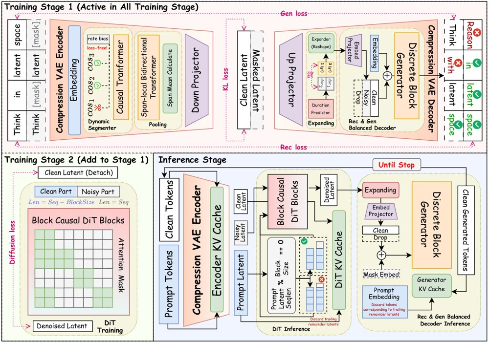
方法概览：第一阶段联合训练压缩编码器与兼顾重建和生成的解码器，第二阶段在分离的隐变量上额外训练 DiT；推理时 DiT 逐块生成隐变量，再由解码器解码为 token。
解决了什么问题。分层语言生成把连续语义建模与离散文本实现拆成两步，但其效果取决于隐空间到底压缩了什么、离散生成器又怎样使用这些隐变量。现有做法往往把压缩率、重建与生成的平衡、以及连续与离散两端的适配分开处理，缺少统一考察。
方法。Cola2 将文本动态切分为语义片段，用无辅助损失的负反馈机制控制压缩率，并把重建与生成两种监督结合起来学习紧凑且可预测的隐表示。解码端采用块因果掩码扩散解码器，训练时输入干净、加噪和丢弃三种隐变量条件，并用无分类器引导调节语义重建与自主生成的权重。token 预测梯度经隐变量回传更新编码器，而 Flow Matching 先验学习通过 stop-gradient 与表示学习解耦；推理时按固定片段布局重新编码已生成文本，以保持隐历史与真实上下文一致。
关键结果。论文在五个下游任务、约 2100 亿训练 token 上验证了核心设计，并报告了有竞争力且尚未饱和的 scaling 表现。在使用 3460.3 亿源 token 训练时，一个尚未收敛的 checkpoint 在八项任务上取得 60.10 的平均分，并在 HellaSwag 与 StoryCloze 上超过 Llama-3-8B，而后者的预训练预算据报告高出 43 倍以上。
为什么值得看。它给出了一条把连续语义规划与离散文本生成放进同一训练回路的具体路径，并显示隐空间压缩方式与解码器条件设计会直接影响分层生成的收益。
局限 / 存疑。关键成绩来自一个未收敛的 checkpoint，且超越 Llama-3-8B 只体现在 HellaSwag 与 StoryCloze 两项任务上，其余任务的绝对数值与模型参数量论文未给出具体数字，因此结论的稳健性仍需完整训练与同规模对照来确认。
基础大模型 & 基础模型底层研究
生成式 AI
alphaXiv · arXiv
FRED：自蒸馏提升世界动作模型未来表示
FRED 把视频扩散模型当作未来表示生成器，用自蒸馏对齐真值未来观测的表示，在真实机器人任务上提升零样本泛化与人类视频技
FRED 概览：学生从纯噪声预测未来表示，EMA 教师从带噪真值未来帧提取同层目标，视频模型同时以历史观测为条件。
解决了什么问题。世界动作模型（WAM）借助预训练视频扩散模型的时空先验学习通用机器人策略。近期做法只用单步去噪得到的中间隐状态条件化一个独立的动作解码器，以避免昂贵的迭代去噪，但这也让动作预测直接依赖这些从噪声生成的表示质量。作者分析发现，这类隐状态在训练中确实逐渐接近干净未来观测的表示，却始终存在明显差距。
方法。FRED 把视频扩散模型的前若干层视为未来表示生成器：学生网络以纯高斯噪声为输入预测中间表示，指数滑动平均（EMA）动量教师则从带噪的真值未来观测（默认噪声水平 τ=0.25）在同一层提取目标表示，再通过 patch 级 softmax 分布之间的 KL 散度做自蒸馏，并用中心化与锐化防止表示坍塌。同时，学生与教师都以 4 帧历史观测加当前帧为条件，提供近期运动的时间上下文。总损失为视频流匹配损失加上权重 0.01 的自蒸馏损失，且不把动作损失回传到视频骨干网络。
关键结果。在 DROID 上训练、新真实环境零样本评测中，14B 规模下长程任务进度从 DreamZero 的 61.7% 提升到 81.7%，域外任务成功率从 10.4% 提升到 52.1%；5B 规模下长程任务从最强 WAM 基线的 31.7% 提升到 46.7%，域外任务从 10.4% 提升到 37.5%，物体指代从 33.3% 提升到 37.5%。在 OpenArm 人形平台上与人类视频协同训练后，仅见于人类视频的迁移任务成功率从最佳基线 DiT4DiT 的 19.4% 提升到 50.0%，指令遵循率也达到 97.2%。消融显示 RoboCasa Kitchen 成功率 68.8%，去掉自蒸馏降至 65.1%，去掉历史条件降至 64.8%，基础 WAM 为 61.4%；该基准上单步生成的未来表示质量与成功率的相关系数为 r=0.89，明显高于单步视频生成质量（r=0.24）。推理延迟方面，14B 模型为 0.406 秒，约为 DreamZero（3.255 秒）的八分之一。
为什么值得看。它给出一条低成本、可操作的训练信号：不必让视频模型真的生成清晰未来帧，只要让单步去噪产生的中间表示更像真值未来观测的表示，就能显著改善机器人控制与泛化。分析中表示质量与成功率的强相关（r=0.89）也为后续 WAM 设计提供了可检验的中间指标。
局限 / 存疑。作者指出，该方法依赖视频骨干本身的语言理解能力，训练目标不额外监督语言 grounding：不做人类视频协同训练时，FRED 在迁移任务上的指令遵循率为 0%，而预训练 VLA 基线仍保留部分能力；人类到机器人的迁移也是隐式的，未显式学习跨具身的表示对应，协同训练后 50.0% 的任务成功率仍属中等。此外，真实世界评测每个任务仅 12 次试验，部分基线（如 AGRA）为作者自行复现，样本规模与复现差异都可能影响结论的稳健性。
生成式 AI
机器人 & 具身智能
alphaXiv · arXiv
按预算联合挑扩散特征：策略自选时间步与通道
Policy-Mask 用强化学习策略在冻结扩散模型中选择时间步、层和通道子集，蒸馏出的学生模型推理时不再需要教师。
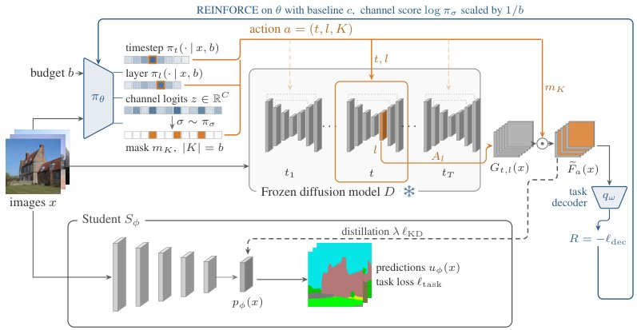
给定图像和通道预算，策略先采样时间步与层，再用 Gumbel top-b 抽出恰好 b 个通道形成掩码，冻结扩散模型的响应经对齐和掩码后既作学生蒸馏目标、又经任务解码器给出策略奖励；推理时只保留学生网络。
解决了什么问题。扩散模型的中间特征能支撑分割、分类和语义对应，但有用信号分散在去噪时间步、网络深度和通道维度上，实际使用时必须决定取哪一步、哪一层、哪些通道。现有做法要么手工固定这些选择，要么只优化时间步等少数抽取超参，并把同一条规则套用到所有输入和所有通道预算上。
方法。作者训练一个以输入图像和通道预算为条件的策略，联合采样时间步、层以及恰好 b 个通道：通道部分用 Gumbel top-b 无放回抽取，并按 Plackett–Luce 计算精确的对数概率。策略的奖励来自一个小任务解码器在选中特征上的损失，用带基线的 REINFORCE 更新；同一份被选特征同时作为学生网络的蒸馏目标。由于通道得分是 b 项之和、而时间步和层各只有一项，作者把通道得分除以 b 做尺度归一，使三个策略头量级可比。推理阶段只评估学生网络，不查询扩散教师。
关键结果。在 128/1280 通道预算下，Policy-Mask 在 ADE20K 上达到 38.9 mIoU（固定时间步与层、保留全部 1280 通道的基线为 37.4），Cityscapes 70.2、CelebA-HQ 79.1、Pascal VOC 74.8，分别比全宽固定抽取高 1.5、1.6、1.2、1.3 mIoU。分类上 CIFAR-10 95.2% top-1、CIFAR-100 75.4%，比文中列出的 RepFusion 条目高 1.0 和 1.3 个百分点；SPair-71k 上为 76.3 PCK@0.1（bbox 归一化 67.5）。固定对齐层后，通道得分归一化把三个种子上的最佳验证 mIoU 从 36.8±0.6 提到 37.7±0.7。
为什么值得看。它把「取哪一步、哪一层、哪些通道」从人工设定变成预算条件下的可学习决策，且部署时只需学生网络，对需要紧凑扩散特征的场景有直接参考价值。
局限 / 存疑。通道预算扫描同时改变了被选特征和蒸馏损失尺度（掩码 KD 损失均值从 b=128 的 0.59 升到 b=512 的 1.35），因此不能把 b=512 的性能下降归因于通道冗余，也无法确认 256 是真正最优预算。动作轴消融、预算扫描和定性分析都只跑了单一种子，Transformer 教师（PixArt-Σ、SD3.5 MMDiT）每项也只有一次评估，作者明确表示这不构成教师架构之间的排名。
计算机视觉 CV
alphaXiv · arXiv
语言作动作接口，潜空间世界模型可跨域规划
LaLa-World 用自然语言统一动作接口，让 JEPA 式潜空间世界模型能同时吃下控制轨迹与视频数据。
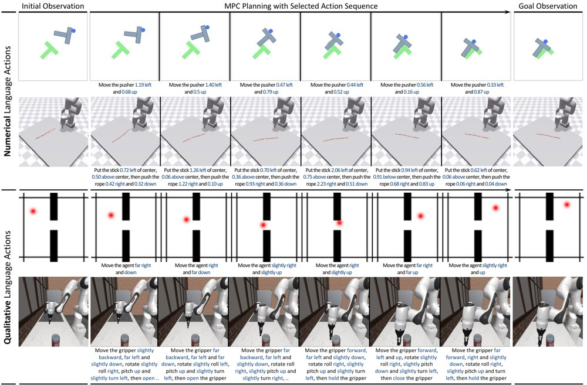
用 MPC 在潜空间中想象候选语言动作下的未来表征并挑选通向目标的最优动作，同一预测器可跨域规划，底部两行展示无数值的纯语言动作。
解决了什么问题。现有 JEPA 式潜空间世界模型（如 V-JEPA 2-AC、DINO-WM）的动作条件预测器基本只在仿真或机器人数据上训练，而数值动作的维度和物理含义随域变化——同一个 [2,4] 在一个域里是水平/垂直位移，在另一个域里含义完全不同，难以学到共享动力学。同时，图像与视频数据量大却普遍缺少数值动作标注，无法直接用于训练动作条件预测器。因此要把这类模型规模化到多域、多源数据，需要一个能容纳异构数据的共享接口。
方法。作者提出用自然语言作为共享接口：把数值动作和视觉变化都描述成语言条件，从而用同一个预测器在控制数据与更广的图像视频数据上联合训练。模型以语言模型为骨干，输入编码后的观测与语言条件，预测未来的视觉表征，不重建像素。在规划阶段用 MPC + CEM 在潜空间里滚动候选动作序列并选出最接近目标的一条；再把预训练的 LaLa-World 微调成 LaLa-Policy，同时输出动作块和对应的未来潜表征。
关键结果。论文报告，尽管所有域共享同一个预测器，LaLa-World 在仿真与机器人两组基准上的平均 MPC 规划得分均为最高（材料中未给出具体数值）。在 RoboCasa 上，LaLa-Policy 与改造后的 Cosmos Policy 基线表现相当，同时每条轨迹的平均推理时间减少 5.5 倍。ImageNet 变换预测实验中，材料仅保留了 IWM 基线的 MRR 0.79（默认设置）与 0.85（强抖动），LaLa-World 自身的 MRR 数值未在材料中给出。策略微调方面，从 LaLa-World 初始化在 LIBERO 与 RoboCasa 上均优于随机初始化与 Qwen3.5 初始化，但材料未给出具体数字。
为什么值得看。它提示了一条不依赖像素重建的世界模型扩展路径：语言接口把不同维度、不同物理含义的动作和没有动作标注的视频统一起来，同一个预测器即可跨域规划，并可作为策略微调的有效初始化。
局限 / 存疑。所有策略与规划实验都在 LIBERO、RoboCasa 等仿真环境完成，尚未在真实机器人上验证；作者也承认，通过语言接口做 LLM 规划仅在较小的想象预算下可行，在需要精细控制的任务上仍有明显提升空间。此外材料中关键数值（规划得分、策略成功率、消融结果）缺失，无法独立判断提升幅度。
机器人 & 具身智能
alphaXiv · arXiv
期刊
Science · The Virtual Biotech: A multi-agent AI framework for therapeutic discovery and development
《Science》刊出“The Virtual Biotech”一文，提出一个面向治疗药物发现与开发的多智能体 AI 框架，试图让多个智能体协作贯穿从靶点识别到开发决策的研发链条。对做 LLM 智能体与多智能体系统的研究生而言，这是一个把 agent 编排、工具调用与领域约束放到高价值真实场景中检验的案例。原文摘要在此仅给出题录信息，具体任务划分与评测方式建议直接查阅正文。
Science · Sequential diagnosis with language models
《Science》刊出“Sequential diagnosis with language models”，主题是语言模型驱动的序贯诊断研究。当前仅提供题录信息、未提供摘要，因此无法报告具体数值结果；建议机器学习研究生阅读原文以核对实验设置与结论。